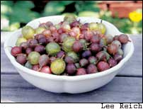
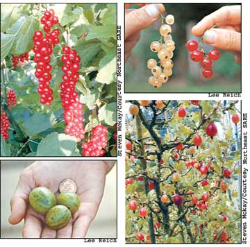

When you first bite into a gooseberry, the tartness of the skin is balanced by the burst of sweet nectar from the flesh of the fruit. Keep eating and your mouth picks up the fragrance of the fruit - similar to the flavors found in good-tasting grapes, plums or apricots. Red, white and pink currants, gooseberry’s close relatives, have a sprightly and refreshing flavor, too, with just a bit of sweetness. Another relative, the European black currant, offers a musky sweet-tartness.
Despite being delicious and easy to grow, gooseberries and currants - in the genus Ribes (RYE-bees) - have had their ups and downs here in the United States. A hundred years ago, they were rising stars along with blueberries as commercial and backyard fruits, but the popularity of currants and gooseberries was cut short when they were implicated in the spread of rust disease in white pines, an important timber crop at the time. A federal law in the 1920s banned their planting, and in the decades that followed, wild and cultivated plants were ripped out of forests and gardens. Because cultivated varieties of gooseberries and red currants are relatively immune to rust disease and because the disease could spread hundreds of miles from susceptible wild Ribes, the ban was not very effective. It was lifted in the 1960s, and the concern was put under state mandate. By then, however, two generations of Americans had forgotten about these tasty berries.
Thanks in large part to Steven McKay, who founded the International Ribes Association when he was teaching agriculture in California 15 years ago, gooseberries and currants are experiencing a renaissance. Nurseries now offer a number of high-quality varieties, so the bushes are increasingly turning up in backyard gardens and on small farms. European black currants, which are extremely rich in vitamin C and antioxidants, also are susceptible to the rust disease, but rust-resistant varieties are being introduced, too. Greg Quinn of New York-based Au Currant Enterprises says he hopes to see 5,000 acres of currants planted in the next decade in the United States.
Over the years, I’ve grown about 50 or so varieties of gooseberries, all of them so-called “dessert” varieties that are delicious both fresh and when cooked into jams and pies. My favorites for flavor include ‘Webster,’ ‘Achilles,’ ‘Hinnonmaki Yellow,’ ‘Jumbo’ and ‘Captivator.’
I also grow a half-dozen varieties each of red currants - ‘Pink Champagne’ is my “currant” favorite - and black currants - ‘Kirovchanka’ (soon to be available from Raintree Nursery or the author - Mother) is my favorite because it’s sweeter than most other varieties but still retains a very rich currant flavor. I sprinkle fresh currants on cereal, cook them into a sauce to pour over ice cream, or freeze them so that I can keep eating them year-round. Many people prefer currants cooked or in pies and jams.
Most people think gooseberries are small, green and sour because until recently only poor-quality varieties were available in the United States. But now gardeners are discovering the wide range of flavors, colors and sizes - there are more than 100 named varieties. In appearance, the range encompasses such varieties as ‘Jumbo,’ with berries approaching the size of a half dollar (and even larger varieties exist), ‘Captivator,’ with a carmine red skin, and ‘Whinham’s Industry,’ covered with prickly-looking but soft hairs.
Gooseberries and currants are not at all difficult to grow, and they tolerate a wider range of conditions than most fruit plants. Most soils will do unless they are at extremes of moisture or acidity. Ribes are unique among fruit plants in tolerating some shade; traditionally, they have made fruitful use of the partially shaded ground between large apple trees. These are plants of northern climates, able to tolerate extreme cold (Zone 3). They can be grown throughout most of the northern half of the United States and further south where mountains or large bodies of water moderate summer temperatures. The bushes always appreciate the cool soil beneath an organic mulch such as straw or leaves, as well as some shade where summers are torrid (in the Midwest, for example) and irrigation where natural rainfall is deficient (in the western mountain states, for example). ‘Glendale’ is a gooseberry variety that is quite tasty and tolerant of summer heat.
Gooseberry and currant bushes grow 3 to 5 feet tall and wide and have thorns. ‘Pixwell’ (because it has no thorns) produces small, tough, tart fruits, hardly worth eating. The tasty variety ‘Captivator,’ though, is almost thornless. Unfortunately, many of the best-tasting varieties, which are those of European heritage, have the most imposing thorns.
Ribes bushes leaf out in early spring, so plant bare-root bushes either in autumn or in very early spring. Potted plants can go in the ground anytime that the soil is not frozen as long as they will be watered, when needed, through their first season. I plant my bushes about 5 feet apart, but the plants can be grown closer together to make an edible hedge.
For best production, gooseberries and currants should be pruned every winter. Gooseberries and red currants bear fruit best on stems that are between one and four years old, and black currants on one-year-old stems. The goal in pruning is to remove older, unproductive stems and to reduce the number of newer stems. Any stems that need pruning should be cut to the ground or to a low, vigorous side branch, and when there’s a choice, save the most vigorous side branches and healthy stems. A mature, pruned gooseberry or red currant bush, then, should begin each season with about a half-dozen each of one-, two-, three- and four-year-old stems. A mature, pruned black currant bush should enter each season with about a dozen one-year-old stems.
Fruit Worms And Leaf Spot
Ribes may or may not encounter pest problems. I grew the plants for more than a decade without problems, but as I expanded my large collection I also inadvertently brought in a few pests that need attention on occasion.
The imported currant worm goes to work early in the season, stripping away new leaves starting from the tips of the branches. One application of an organic insecticide applied as soon as you see the damage will control this pest and, if thorough, may eliminate the need for another spray application when the time comes around for the second or third brood.
Gooseberry fruit worm - the other major insect pest - is even more rare, burrowing into the berries and joining the fruits (and sometimes the leaves) together with silken threads. That old standby, Bt (Bacillus thuringiensis), does in this pest.
A couple of diseases can cause problems. The first is leaf spot, which is more serious on gooseberries. The symptoms are dark spots on the leaves, after which the leaves yellow and then drop. Although this disease sometimes defoliates my gooseberry bushes by late summer, giving them a sorry look, fruit production does not seem overly affected. Raking up old leaves, burying them beneath mulch and applying copper sprays all are effective in limiting this disease.
Powdery mildew disease results in powdery white patches on leaves and later deformation of leaves and stems. Sprays can help (including the traditional sulfur or lime-sulfur applied just as buds swell) just after bloom, and again three weeks later; or try weekly sprays of a mixture of 1 tablespoon each of baking soda and soybean oil per gallon of water.
Because powdery mildew is so widespread on gooseberries, breeders have worked to develop resistant varieties. A number of these varieties have been bred in Russia and Germany, but the most disease-resistant ones available in this country - and they’re resistant to leaf spot as well - include ‘Poorman,’ ‘Welcome,’ ‘Hinnonmaki Yellow,’ ‘Captivator,’ ‘Glendale’ and ‘Red Jacket.’ Even though the aforementioned sprays for diseases are relatively benign, I usually grow resistant varieties rather than bother with any spraying.
Black currants begin to ripen just after the first blueberries, and after months without any fresh berries, the strong flavor of these vitamin-packed fresh black currants is really appealing. The fruits are born on short strigs (delicate, drooping stems). Red currants hang like jewels on longer strigs and begin to ripen a few weeks after black currants. They remain on the bush in good condition, sweetening for a few weeks. You can either harvest whole strigs and then strip them of their berries at the kitchen table, or strip them from the bushes right into a bowl - running them through the tines of a fork works well. Harvest gooseberries at about the same time as red currants. Unless the berries are used for cooking, they taste best - as do other fresh fruits - when harvested dead-ripe, at which stage they don’t keep very well, but like all berries, they freeze beautifully. Gooseberries picked a bit underripe will ripen well off the vine, and can be stored up to one month in the refrigerator. In 1929, Edward Bunyard wrote in The Anatomy of Dessert that “The gooseberry is of course the fruit par excellence for ambulant consumption.” I agree - right out in the garden is the best place to eat these fresh-picked delicacies.
Lee Reich (www.leereich.com) gardens in New Paltz, N.Y., and is the author of Uncommon Fruits for Every Garden and Weedless Gardening (both are available at www.MotherEarthNews.com).
|
 Clockwise from top: ‘Rovada’ red currants on the vine; red and pink currants; gooseberries on the bush at Wisley Gardens in England; and ‘Jumbo’ gooseberries compared to a penny. |
 |
|